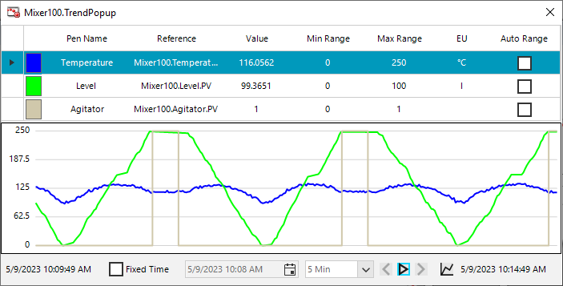
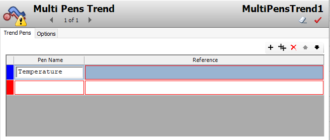
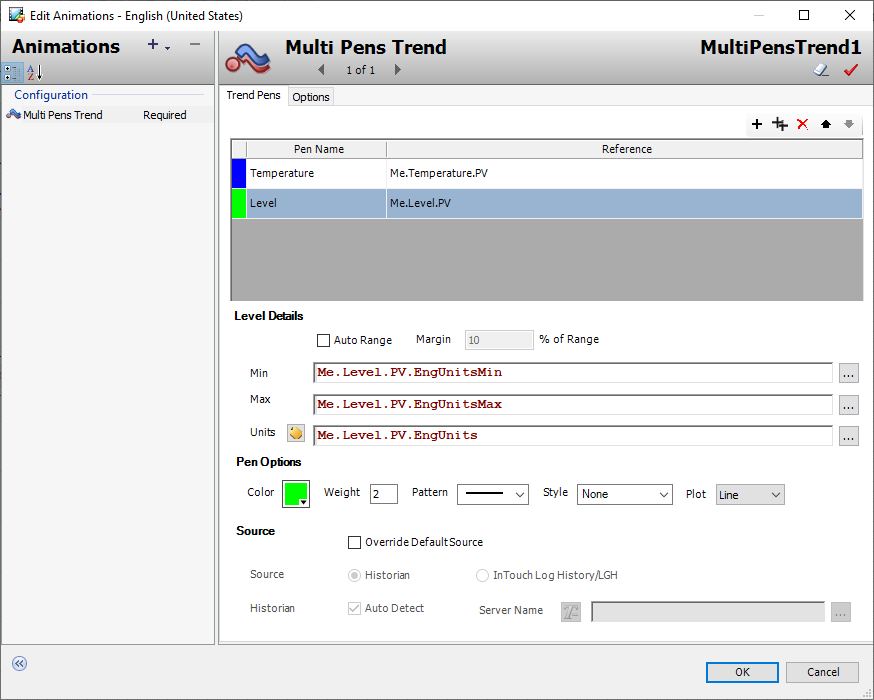
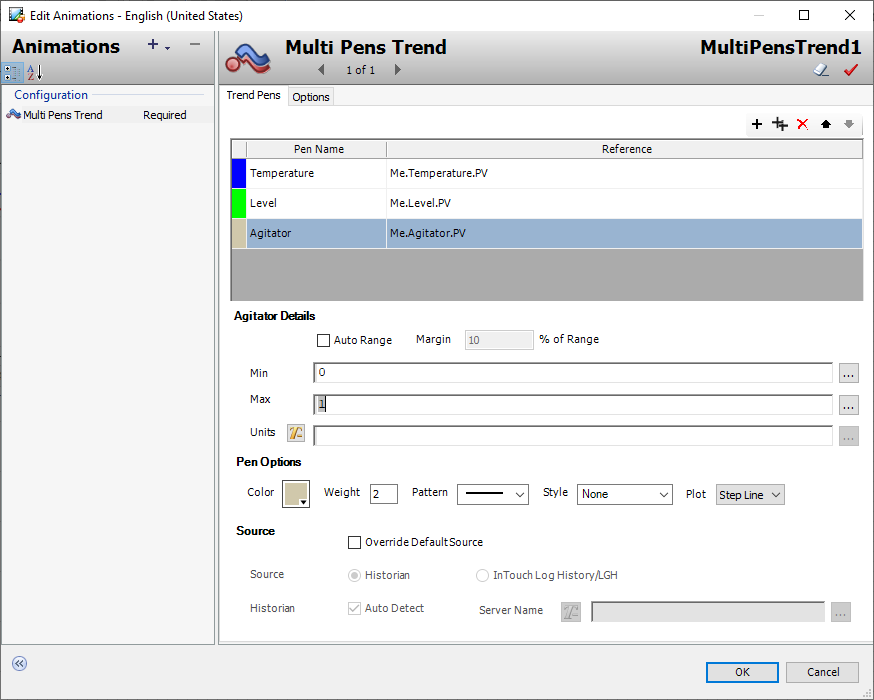
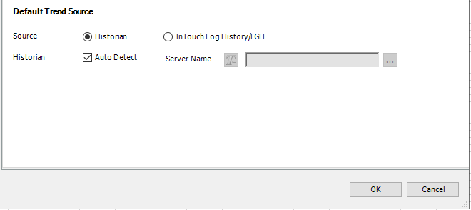
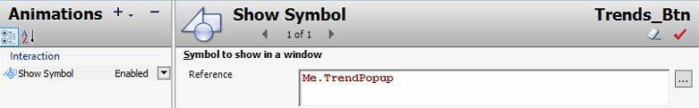
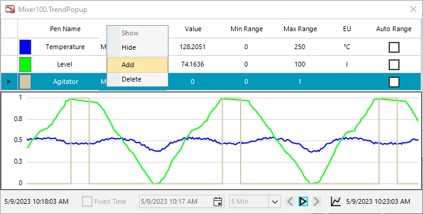
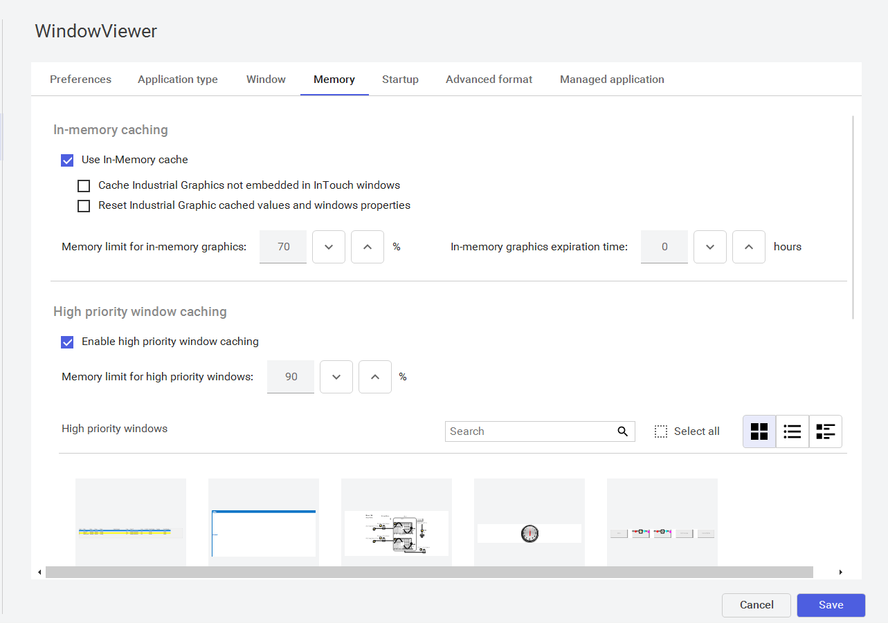
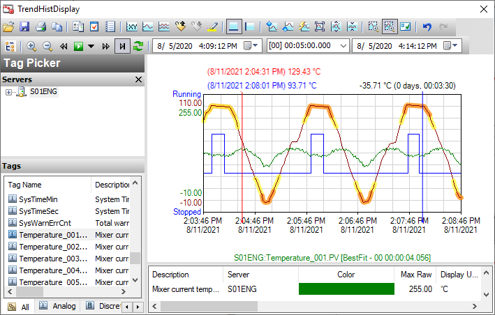

Runtime tooltip showing Temperature, Level, and Agitator values at a specific time point (page 413)
Source: AVEVA InTouch for System Platform 2023 Training Manual, Module 6, Lab 18 (pages 403–422) and Section 4 (pages 421–430)
In this lab you will build a Multi Pens Trend popup for the mixer, configure three pens (Temperature, Level, Agitator), and add a pen at runtime. The lesson also introduces the Historian Client .NET controls used for advanced trending.
Reference: Module 6, Lab 18 (pages 403–404)
In this lab you will build a TrendPopup symbol that operators can open from the mixing process graphic. The popup will display three process values simultaneously on a single chart, with Historian providing backfill data so the chart is never empty.

Reference: Module 6, Lab 18 (pages 404–409)
Open the $Mixer template and create a new symbol named TrendPopup. Place a Multi Pens Trend control from the Tools menu onto the canvas. The Edit Animations dialog opens with the Trend Pens tab active.
Configure the first pen for Temperature with these settings:
| Property | Value |
|---|---|
| Pen Name | Temperature |
| Reference | Me.Temperature.PV |
| Min | Me.Temperature.PV.EngUnitsMin |
| Max | Me.Temperature.PV.EngUnitsMax |
| Units | Me.Temperature.PV.EngUnits |
| Color | Blue |
| Plot | Line |

Add a second pen for Level with bright green color and Me.Level.PV as the reference. Then click Add a row to create a third pen for Agitator with Me.Agitator.PV, Min 0, Max 1, and the default Step Line plot type.


Reference: Module 6, Lab 18 (pages 410–412)
Verify the Options tab settings: Source is set to Historian with Auto Detect enabled. This ensures backfill at runtime. Click OK, save the graphic, then open MixingProcess_Detailed.
Duplicate the Alarms button, place it to the right, and rename it Trends_Btn with text "Trends". Configure a Show Symbol animation pointing to Me.TrendPopup. Save, close, and check in the $Mixer template.


Reference: Module 6, Lab 18 (pages 413–415)
Switch to Runtime and click the Trends button. The popup should display three pens with live values. Use Pause to freeze the chart, hover to see tooltips, and Resume to continue. Right-click the legend and select Add to add a fourth pen at runtime — enter Inlet1 with reference Me.Inlet1.LSOpen and Max Range of 1.

Reference: Module 6, Lab 18 (pages 416–419)
To fix this: go to File > Configure > WindowViewer, select the Memory tab, and uncheck "Cache Industrial Graphics not embedded in InTouch windows." Save, close WindowViewer, and restart Runtime. Now switching mixers will update the popup correctly.

Reference: Module 6, Section 4 (pages 421–428)
Historian Client provides several .NET controls that can be imported into the Galaxy and embedded into symbols. These controls are purchased and licensed separately. They fall into two categories:

1. What are the two categories of Historian Client .NET controls, and how do they differ?
Application controls (Trend, Query) run as near-standalone applications with minimal scripting. Building block controls (TagPicker, TimeRangePicker, ActiveDataGrid, SingleValueEntry) provide specific functionality and require scripting to work.
2. Why must you disable "Cache Industrial Graphics not embedded in InTouch windows" in WindowViewer settings?
Because the default caching causes the last state of an Industrial Graphic to persist when reopened. This means the TrendPopup won't update its references when switching between different mixers at runtime.
3. How do you add a pen to the Multi Pens Trend at runtime?
Right-click the legend area and select Add. A new row appears in the legend where you can enter the Pen Name, Reference, and Max Range. The pen immediately appears on the chart.
4. What script function is used to connect the aaHistClientTrend to a Historian server?
The AddServerEx() method, called with the server name, username, password, and a boolean for integrated security — for example: Trend.AddServerEx(HistServer,"","",false).
Module 6 — Trend Visualization. AVEVA InTouch for System Platform 2023 Training.
Next: Lesson 34 — Historian Client Trend + Lab 19